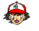

*** MUNDO POKÉMON - POKÉMANIA ***

Bem-vindo à seção de Pokémon! Aqui você vai entender como uma simples ideia de colecionar insetos se tornou o maior fenômeno de cultura pop e RPG do planeta.

A Origem: Satoshi Tajiri e a Game FreakA história de Pokémon começou com a paixão de infância do seu criador, Satoshi Tajiri. Quando criança, Tajiri adorava colecionar e caçar insetos nos campos e florestas dos arredores de Tóquio. Com a urbanização do Japão, os campos foram dando lugar a edifícios, mas a ideia de capturar e colecionar criaturas permaneceu viva em sua mente.
Ao lado do desenhista Ken Sugimori, Tajiri fundou a revista (e mais tarde produtora) Game Freak. Quando ele viu o Game Boy da Nintendo e o seu acessório Game Link Cable, imaginou insetos caminhando de um console para o outro através do cabo. Assim nascia a ideia original chamada de Capsule Monsters (CapMon), que posteriormente evoluiu para Pocket Monsters e, finalmente, Pokémon.
Lançado inicialmente no Japão em 1996 (com as versões Red e Green) e anos depois no ocidente (Red e Blue), o jogo revolucionou a indústria. O Game Boy, que já era considerado um portátil veterano, ressuscitou nas vendas.
O grande trunfo do jogo foi dividir os 151 Pokémon entre as duas versões, forçando os jogadores a se encontrarem na vida real usando o cabo link para fazer trocas. Foi a época dos rumores nas revistas de videogame e das famosas lendas de internet sobre como encontrar o lendário Mew embaixo do caminhão próximo ao navio S.S. Anne!
Para alavancar as vendas e expandir a marca, a franquia ganhou um seriado de animação em 1997 focado em Ash Ketchum (Satoshi, no Japão) e seu inseparável Pikachu.
O anime conseguiu reproduzir com maestria todas as mecânicas de um RPG do Game Boy para as telas de TV:
- Jornada dos Ginásios: Ash precisa derrotar 8 Líderes de Ginásio para conquistar suas Insígnias, exatamente como o progresso do jogador no portátil.
- Vantagens de Tipos: As batalhas destacavam a importância de usar o tipo certo contra o oponente (Fogo vence Planta, Água vence Fogo, Elétrico vence Água).
- Captura e Evolução: O aprendizado de novos ataques e as marcantes evoluções durante os episódios dramáticos refletiam o ganho de experiência (EXP) dos jogos.
© Todos os direitos reservados.
Gemini IA ajudou a editar esse conteúdo.